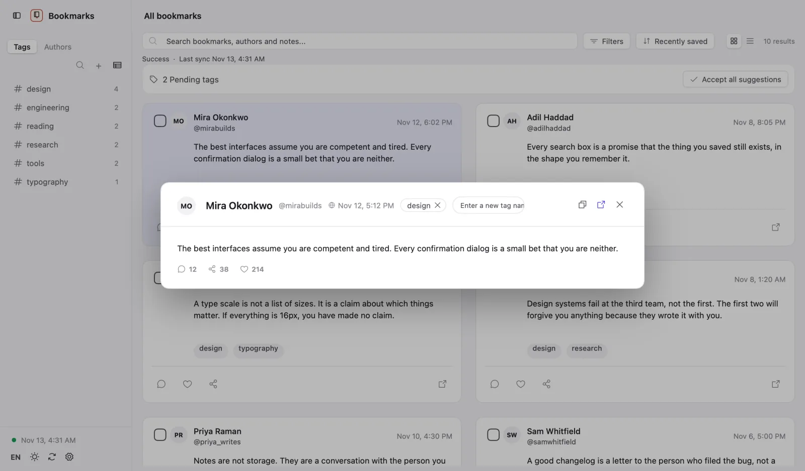
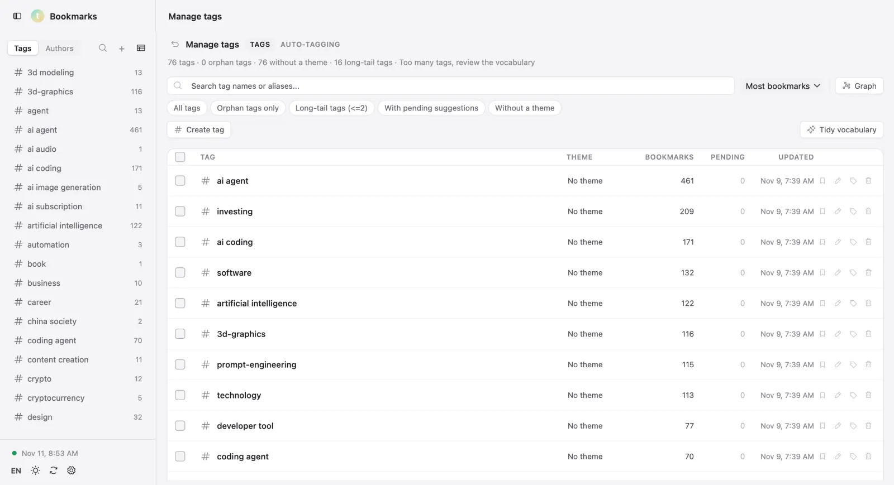

Local-first bookmark library
The feed forgets. Your library shouldn't.
trove takes everything you saved on X — posts, authors, dates, counts — and files it into one database you own. Sync in the background, tag what matters, and find it again next year.

A bookmark is a promise you made to your future self.
X keeps that promise in a tab you will never open again. trove keeps it in a file you can open, search, back up and read offline — on your own disk, in a format that will outlast the app.
What it does
Four things, done properly.
No dashboards, no streaks, no assistant in the corner. One workspace, one detail pane, and a sync that behaves when the network does not.
Pull every bookmark from X into local SQLite, with author, date and engagement counts. An interrupted run resumes; it does not start over.
Aliases, themes and a review queue. Move a whole shelf into a new tag in one pass, and merge the near-duplicates that accumulate.
Keyword heuristics out of the box; bring your own model key for a second pass. Every suggestion waits for your yes.
The post, the thread, the date you saved it, your own note — read without leaving the library or loading x.com.
The workspace
A reading desk, not a feed.
Three columns: what you saved, what it says, what it belongs to. No infinite scroll, no recommendation, no reason to open the timeline again.
- Search text, author and tag at the same time
- Notes travel with the bookmark, not in a separate app
- Media cached locally, so a deleted post stays readable

The tag library
Tags you can actually keep.
"design" and "ui" stop being two shelves. Suggestions come from your own keywords first, never from a model you did not choose.
- Accept, reject or merge suggestions in a batch
- Every tag shows its count, so dead shelves are visible
- Export the whole library as one .trovebundle file

Privacy
Your reading list is nobody's business.
trove talks to X with your own session cookies and writes to a SQLite file on your disk. There is no trove account, no sync server and no analytics endpoint to opt out of.
Local by default
Every bookmark, tag and note lives in one database file. Back it up by copying it.
Credentials in the system vault
Cookies go to the macOS Keychain or Windows Credential Manager. The app checks that a key exists; it never prints one.
Nothing to opt out of
No telemetry, no crash reporting, no update pings. Downloads come from GitHub releases when you ask.
The screenshots on this page come from a seeded demo library. Every account, post and tag in them is invented; none belongs to a real X user.
Install
Two minutes, no account.
-
01
Download
Pick the build for your platform below. Every build is the same app.
-
02
Open it
macOS: right-click the app and choose Open on first launch. Windows: run the installer.
-
03
Connect X
trove reads the session cookies from a browser you are already signed in to, or you paste
auth_tokenandct0once. -
04
Sync
The first full sync runs in the background. The app stays usable while it works.
Download
Download trove.
Version 0.3.0, an unsigned development build for macOS 12+ and Windows 10+. Links point at the latest GitHub release.
Unsigned builds: macOS needs right-click → Open on first launch; Windows may show a SmartScreen prompt.
All releases